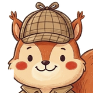

브리핑 전에 한 쪽만 보는 "이번 사건의 열쇠"예요. 퀴즈 없이, 탐정이 자기 하루를 시간 표현으로 들려줘요. 문장을 누르면 소리와 함께 시계·시간 막대가 그 문장대로 움직여요. 소리는 시안이라 브라우저 음성이에요.

My day사건 카드 → 수사 준비 한 쪽 → 브리핑으로 → 오소리 경사. 맞고 틀림·점수·진행 막대가 없다.at은 시계 바늘이 그 시각으로 돌고 막대에 핀 하나, from A to B는 막대가 칠해짐, between A and B는 그 사이를 ? 핀이 오간다, 숫자 줄은 센 박자가 뛴다(한 번 더 누르면 13 ↔ 30).해석 버튼 뒤.| 방식 | 모습 | 좋은 점 / 아쉬운 점 |
|---|---|---|
| 탐정의 하루 (이 시안) | 탐정이 자기 하루를 들려주는 일기장 한 쪽, 누르면 그림이 움직임 | 캐릭터와 이어져 재미있고 한 쪽으로 끝남 / 문장 5개를 직접 눌러야 다 들음 |
| 탐정의 메모 한 장 | 탐정이 손글씨로 적은 요점 메모 + 예시 한 줄씩 ▶ | 가장 짧고 명확 / 교과서처럼 느껴질 수 있음 |
| 시계 장난감 | 시계 바늘을 손가락으로 돌리면 그 시각을 읽어 줌, 막대를 끌면 from/between을 읽어 줌 | 만지는 재미 / 전치사 차이를 보여 주기엔 약함 |
| 브리핑 속 열쇠 | 따로 쪽 없이, 경사 브리핑의 시간 표현에 열쇠 표시 → 누르면 작은 설명 카드 | 흐름이 끊기지 않음 / 엄밀히는 예습이 아니라 그 자리 설명 |